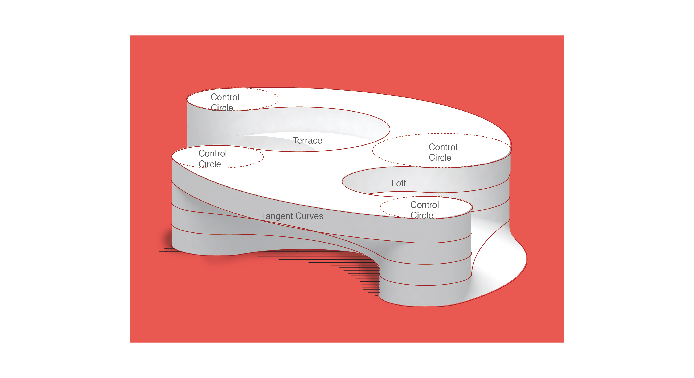
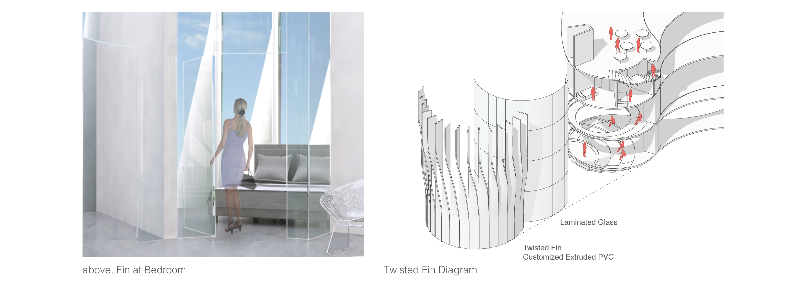

Houston NASA Research Center Design
Location: Houston NASA Campus
Program: Research Center
above, day rendering from the main street
Datum Analysis
The datum has the potential to create spaces that both reinforce and challenge the open plan or terminal room plan by pushing or pulling tangent curves. Concave tangent curves tend to invade the central space, creating individual spaces and a terminal room condition. On the other hand, convex curves balloon out and create more space, blurring the identity of the anchoring circles and creating an open plan condition.
above, datum deformation and figure set
The first figure, being the starting figure, consists of four anchoring circles connected by tangent curves. The tangent curves on the top and bottom are then pulled out while the left and right are pushed in. These pushes and pulls continue in the same direction for the next three figures. The figures are then stacked, creating the envelope and floor plates of the building.
above, 2D to 3D configuration
Project Design
above, floor plans
above, floor plan diagrams
Through the plans the initial spatial suggestions implied by the figures are challenged or reinforced through program, circulation, and visual connections. Not only are these spaces formed by tangent curves, but they also “go off on a tangent” and diverge from what was initially expected.
above, site plan
The main entrance and loft face the entrance of the NASA campus while the outdoor terraces and cafe area face the tram-tour road. At a closer look, when one enters the site through the main gate, they arrive at a parking lot created with the same formal moves as the figures. When one enters through the tram tour or Rocket park, the existing path is extended and connected to the main entry of our building. The form of the building also creates shaded outdoor areas in front of the main entry and back near the cafe.
above, view of lobby open plan
Envelope Design
When we visited NASA Johnson Space Center, a frustrating discovery is that an innovative organization like NASA hid its interesting spaces and exhibitions in boring, generic, concrete boxes. To address this issue, a responsive envelope system comprised of vertical strip is developed to challenge typical NASA interface.
above, east elevation
As an interactive system, the strips index both the form of the building and the program behind to the public. At a performative level, the strips twist to create sunshade while also providing sunlight and views. At an aesthetic level, the white strips create a lighter building, grabbing the attention of the visitor and directing their eyes from the ground to the sky. The strips also break the tendency to read the building as stacked horizontal plates and unify the building as one mass.
above, envelope diagram

above, twisted fin
The facade does not expose the program but rather implies it subtly through the strategy of twisting. There are three fin orientations: 90, 45 and 5 degrees angled from the glazing, ordered from public to private. One example of how the fin twists is here from the auditorium to the residential to the shared kitchen. And the fins for the bedroom is closed at the bottom to ensure privacy and then open up at the top.